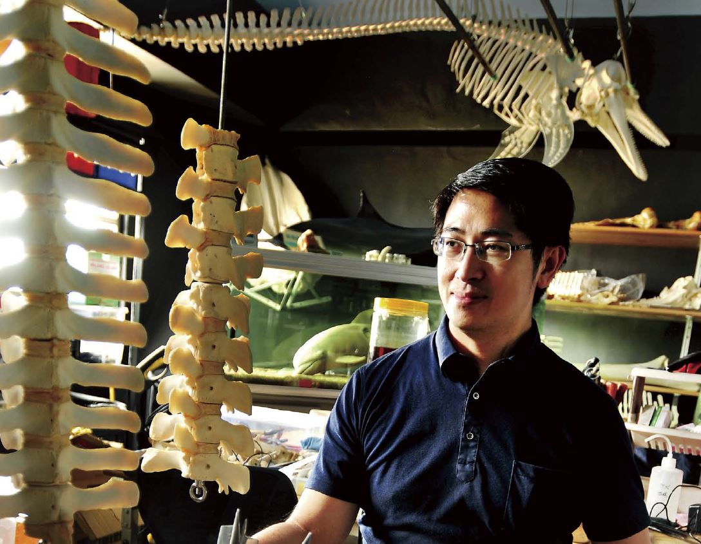

創立組織
於1987年，台大周蓮香教授，在中華民國自然保育協會之下推動成立鯨豚小組。
亞太地區首例
於1988年，在自然生態保育協會的支持及多人的努力下，成立了亞太地區第一個鯨豚保育協會-「中華鯨豚協會」。

澎湖屠殺事件
於1990年，因澎湖屠殺海豚的事件國際上披露，保育行動及生態研究才陸續展開。

理事長-楊瑋誠 先生
於2003年進修台灣大學生態與演化生物學研究所，是台灣少數的鯨豚專門獸醫師，接觸鯨豚醫療至今已超過十年，參與的鯨豚擱淺處理超過百起。現在的他把自己定位為保育醫學研究人員，開創許多研究先例，不只救一頭海豚，而是從醫學角度解決海豚面臨的生存困境，走在一條「鯨」奇的不凡道路。